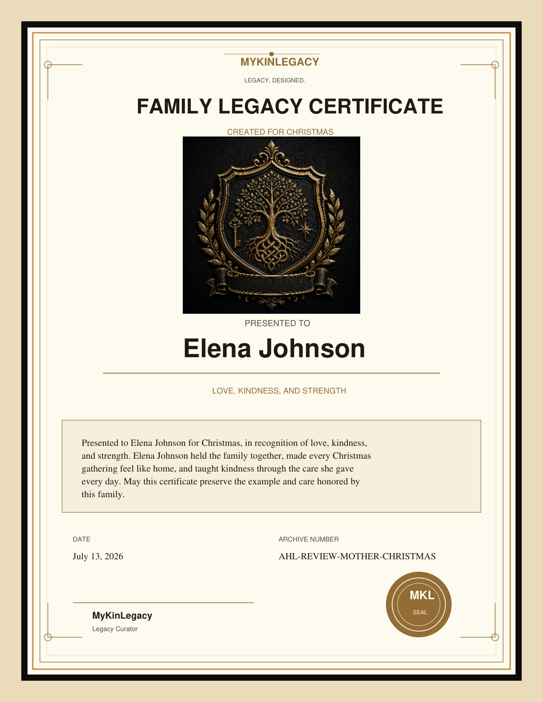
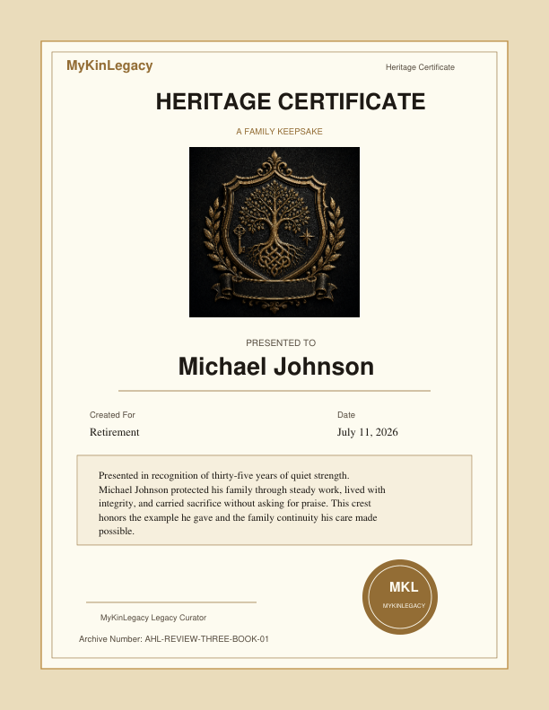

My mother / Christmas
Elena Johnson

1 pageUS Letter144 DPI reviewApproved Final Crest
Recipient coverage: all publications. Occasion coverage: all publications. Stale profile matches: 0.
Founder visual approval checkpoint
One finished, frameable certificate page using the existing approved Final Crest. Public checkout remains paused until Founder approves these screenshots.
Before

Report-like hierarchy with a secondary authentication page.
After
The certificate is now the primary product: ornate controlled border, large crest, recipient, occasion, values, date, archive number, signature, and intentional brand seal on one page.
At least 0.5 inch for all essential content; decorative outer rule remains inside the page edge.
My mother / Christmas

Recipient coverage: all publications. Occasion coverage: all publications. Stale profile matches: 0.
My father / Retirement
Recipient coverage: all publications. Occasion coverage: all publications. Stale profile matches: 0.
Automated overflow/clipping result: PASS. Founder visual inspection remains the release gate. Checkout status: Remains paused pending Founder approval of the actual certificate screenshots.